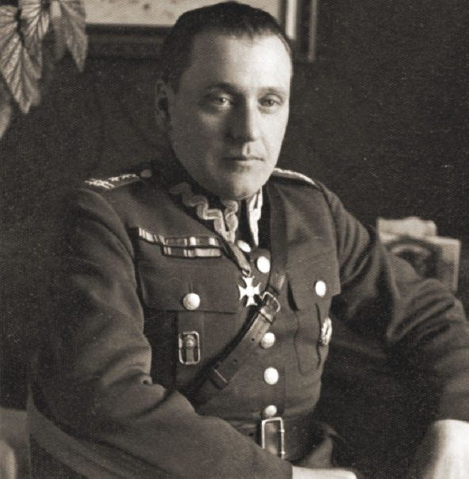
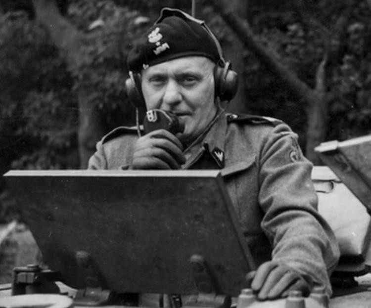

Stanisław Maczek
Stanisław Maczek (1892-1994) - a Polish general from World War II, a hero for Poland and many countries of Western Europe
Early ages
He was born in Szczerzec near Lviv. His family was of Croatian origin. After graduating from high school, he moved with his family to Lviv. In the years 1910–1914 he studied at the Humanities. At that time, he underwent military training and in 1912 joined the shooting association.

Before World War II
During World War I, he was drafted into the Austro-Hungarian army. He probably tried to join the Legions organized by Józef Piłsudski, but he failed.
He also fought in the Polish-Ukrainian war, where he deserved a lot in battle and gained the title of captain.
During the Polish-Bolshevik war, he defended Lviv.
World War II
In September, he fought in the south of Poland. He fought near Rzeszów. Then it moved to Lviv. After the attack of the Soviet Union, Maczek decided to leave the country. Together with the soldiers he crossed the border and made his way to Hungary. On October 21, he was already in France.
There he became the commander of the light brigade. In June 1940 he fought to defend France.
Then, after a long journey, he ended up in Great Britain. There he was entrusted with the command of the 2nd Rifleman Brigade, in February 1942 renamed the 1st Armored Brigade.
After the Allied invasion of Normandy in June 1944, the time also came for the actions of the 1st Armored Division. On August 1, 1944, the division landed in Normandy, near Caen.
In constant battles with the Wehrmacht, General Maczek led the division towards Belgium and the Netherlands. He liberated, among others Ypres, Ghent and Passchendale.
Thanks to an excellent flaanking maneuver, after heavy fights, Maczek managed to liberate Breda without losses among the civilian population.
On May 4, 1945, the division reached the Kriegsmarine base in Wilhelmshaven, where the general accepted the surrender of the fortress command. On June 1, 1945, he was promoted to Major General.
On May 19, 1945, in the German town of Haren, previously captured by the 1st Armored Division, located in Lower Saxony, General Stanisław Maczek and his soldiers created temporary accommodation for Poles, prisoners of former German camps, soldiers who did not have a roof over their heads. About 5,000 Poles lived in the town.
After war
Stanisław Maczek remained in exile in Edinburgh, Great Britain. From September 1945 he commanded the Polish units that remained in Great Britain until their demobilization. From 1945, deprived of benefits due to Allied soldiers, he started working as a salesman and then a bartender in the restaurants of hotels run at that time by Polish emigrants: "Dorchester" and "Learmonth" in Edinburgh.
On September 26, 1946, the Polish government deprived Maczek of his Polish citizenship. On March 15, 1989, the resolution depriving Maczek of his citizenship was repealed. On February 26, 1989, a private letter from Prime Minister Rakowski was delivered to the general, apologizing for taking his citizenship.
At the request of more than 40,000 Breda residents, the general was granted honorary citizenship of the Netherlands. On November 11, 1990, he was promoted by the President of the Republic of Poland in Exile to the rank of Lieutenant General.
Zmarł w wieku 102 lat w Edynburgu. Został pochowany na cmentarzu żołnierzy polskich w Bredzie.